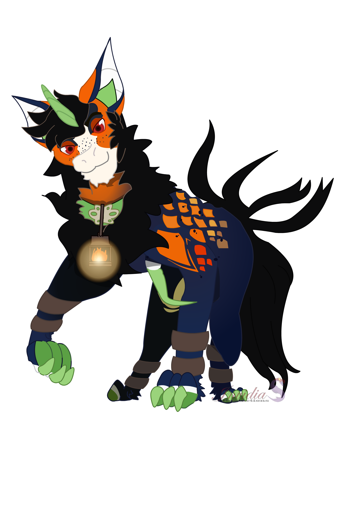

| GARROX | ||
|---|---|---|
| HOME | ABOUT | LINKS |
|
Garrox are nocturnal creatures that thrive in areas of untouched forest, residing often in buildings that have been abandoned for years. They are earth spirits that strive to return the world to its natural state.
---
Garrox culture worships a creator deity and a trio of other deities; Sire, The nameless sire of the Garrox race, and god of the earth, life, and music. Veracity, god of knowledge, truth, and the night. Entropy, god of chaos, vitality, and the day. Parity, god of harmony, law, and twilight.
The creatures sire created were beautiful, bipedal creatures with large wings. They were intelligent, just and loving, adoring the world and all its inhabitants. They brought life to the world around them, and were there in times of great environmental peril to heal the land again. And they did this for a great many years.
However, in the last century, Entropy grew bored, and scattering the united species of the Garrox with lies and deceit, war raged. Many fled into hiding, others turned on their kind, becoming champions of Entropy. An explosive battle raged between the dwindling numbers of the species, and it wasn't long before they had nearly wiped themselves off the face of the planet. Veracity fought Entropy, but they found it harder and harder to find warriors of true in the land of lies. With the growing power from the chaos Entropy put a curse on the garrox.
Cursed by Entropy, the garrox became a twisted creature; a distorted shell of what they once were. Forced to their hands and knees by the malicious god they became quadrupeds, their wings stolen from them and left as withered, gnarled appendages that were rendered completely useless as a reminder of their misdeeds.
Since then, the struggling species has split, creating small packs of their dwindling numbers, where trust in each other is strained, if not non-existent. The champions of Entropy remain a threat, creating a single pack of their own. The forces of Entropy and Veracity fight on to this day.
 |
||
| Copyright 2017 | Reference List | Download Report |